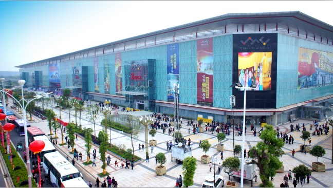

2号小商品交易广场，建筑面积：约20万㎡ ，经营范围：年画年历 婚庆用品、洗涤化妆品、文体用品、不锈钢制品及生活陶瓷、塑料制品、小家电、日用百货、玩具、精品饰品、工艺品、钟表、眼镜等。
中部小商品采购中心：江西首个大型小商品专业批发市场，位于2号交易广场 2、3、4层，填补中部大型综合小商品市场空白，促使南昌乃至整个中部小商品市场步入成熟化、规模化、品牌化等。未来借助成熟鞋业商家多年的运营经验以及强大的行业带动力，其必将成为足矣影响中部、辐射全国的小商品百货批发中心。
中部鞋业批发中心：位于2号交易广场富一层，占地近2万平米，其规模之大、档次之高、品种之全、性价之优等特性，彻底改变江西传统鞋类市场低档次、依附性强的特点，一站式满足经营及消费者所需的同时，为相关经营散户提供一个统一经营，抱团发展，合作共赢的绝佳场地，填补整个江西大型鞋类专业市场空白。